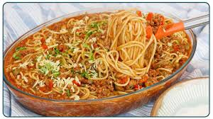
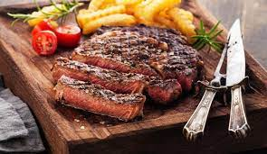
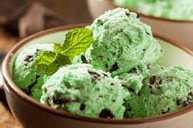
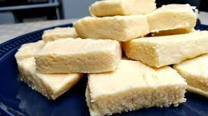
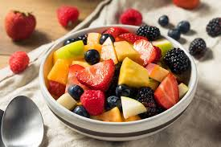

Me chamo Hudson, sou estudante do IFPR e sou uma pessoa considerada como doida as vezes kkkk. Gosto muito do meu jeito estrovertido e agitado e da minha rotina corrida de trabalhar, estudar e estar sempre seguindo na minha caminhada de fé!
ITENS FAVORITOS
COMIDAS

A pizza é uma delícia que combina massa fina ou grossa, molho de tomate, queijo e diversos recheios, como calabresa, queijo, pepperoni ou até mesmo ingredientes mais diferentes, como frutas. Ela é perfeita para compartilhar com os amigos e família, especialmente em festas e encontros

O macarrão é um prato simples e rápido, que agrada a todos. Feito geralmente com farinha de trigo e água, ele pode ser servido com diferentes molhos, como o tradicional molho de tomate, molho branco, bolonhesa ou até mesmo com queijo e ervas. O macarrão é uma opção prática para o dia a dia, mas também pode ser preparado de forma sofisticada.

A carne, por sua vez, é um alimento muito nutritivo e versátil. Pode ser preparada de várias formas: grelhada, assada, cozida ou na chapa. As carnes mais comuns são a bovina, suína e de frango. Além do sabor, a carne é uma ótima fonte de proteínas, que ajudam no crescimento e na energia do corpo.
DOCES

SORVETE

DOCE-DE-LEITE

SALADA-DE-FRUTA
LIVROS
Tratado
Biblia
Diario de um banana
ITENS FAVORITOS (pt2)
ESPORTES
BASQUETE
DOWNHILL
WHEELING BIKE
FILMES/SERIES
NARUTO
NEED FOR SPEED (o filme)
INSEPARÁVEIS
OUTROS
LINKS
Ir para a uma loja de drones FPV muito interessante Ir para o wikipedia falando sobre o coisa de nerd Ir para o site da aluraVIDEOS
| Horários | Segunda | Terça | Quarta | Quinta | Sexta |
|---|---|---|---|---|---|
| 08:00 - 08:50 | Matamética | Física | Filosofia | E. Física | Redes |
| 08:50 - 09:40 | Matamética | Sociologia | Filosofia | E. Física | Redes |
| 09:40 - 09:55 | Intervalo | Intervalo | Intervalo | Intervalo | Intervalo |
| 09:40 - 10:45 | Português | Matemática | Geografia | L. Programação | TechWeb |
| 10:45 - 11:35 | Português | Inglês | Geografia | L. Programação | TechWeb |
| 11:35 - 12:25 | Geografia | Inglês | Almoço | L. Programação | TechWeb |
| 12:25 - 13:30 | Almoço | Almoço | Almoço | Almoço | Almoço |
| 13:30 - 18:00 | CredFacil | CredFacil | Aulas extras | CredFacil | CredFacil |